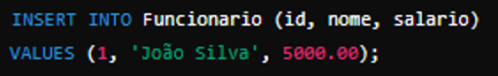
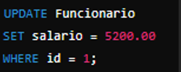
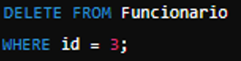
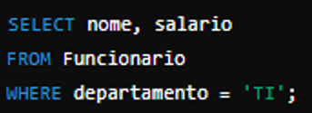
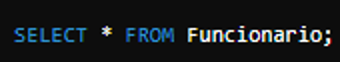
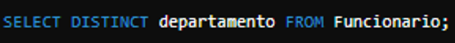

Banco de Dados
Dados vs Modelagem de Dados
O que é Modelagem de Dados? Modelagem de dados é o processo de criar uma estrutura ou esquema que define como os dados serão armazenados, organizados e inter-relacionados dentro de um banco de dados
Modelagem Conceitual: Define o que deve estar no banco de dados, usando diagramas de alto nível como Diagramas de Entidade-Relacionamento (ERD). Não se preocupa com detalhes técnicos, mas com a estrutura lógica dos dados
Modelagem Lógica: Detalha a modelagem conceitual com mais precisão, incluindo atributos e tipos de dados, mas ainda independente de um sistema de gerenciamento de banco de dados específico.
Modelagem Física: Traduz o modelo lógico em um esquema que pode ser implementado em um banco de dados específico, incluindo detalhes como índices, chaves primárias e estrangeiras, e tipos de armazenamento
Exemplos para clarificar
Dados
Imagine que você tem uma lista de alunos em uma escola:
• Nome: João Silva
• Idade: 15
• Turma: 10º ano
Esses são dados brutos que podem ser armazenados em uma tabela.
Modelagem de Dados
Para organizar esses dados, você precisa criar um modelo que define como eles se relacionam
Modelagem Conceitual
Um Diagrama de Entidade-Relacionamento (ERD) pode mostrar que você tem duas entidades principais: Aluno e Turma.
• Aluno: Nome, Idade, Matrícula
• Turma: Código da Turma, Nome da Turma
E um relacionamento: Um aluno pertence a uma turma
Modelagem Lógica
Define os atributos e os relacionamentos mais detalhadamente

Modelagem Física
Transforma o modelo lógico em comandos SQL

Banco de Dados Relacionais
Um Banco de Dados Relacional (ou SGBDR - Sistema de Gerenciamento de Banco de Dados Relacional) é um tipo de banco de dados que organiza os dados em tabelas relacionadas
Vantagens e Desvantagens
Vantagens
• Estrutura Organizada: Facilidade na organização e estruturação dos dados.
• Integridade Referencial: Garantia de consistência e integridade dos dados.
• Flexibilidade: Suporte a consultas complexas e análises de dados.
Desvantagens
• Escalabilidade: Em grandes volumes de dados, pode ser necessário otimizar para melhor performance.
• Esquema Rígido: Alterações no esquema podem ser complexas em algumas situações.
• Custo: Alguns sistemas de banco de dados relacionais podem ser caros em comparação com alternativas NoSQL.
Comandos DDL - Data Definition Language
CREATE TABLE: Cria uma nova tabela

CREATE INDEX: Cria um índice para acelerar a recuperação de dados em tabelas grandes

ALTER
O comando ALTER é usado para modificar a estrutura de objetos existentes no banco de dados.
ALTER TABLE: Adiciona, modifica ou remove colunas de uma tabela
DROP
DROP TABLE: Remove uma tabela e todos os seus dados
Comandos DML - Data Manipulation Language
O comando INSERT é usado para inserir novos registros em uma tabela.

Inserir múltiplos registros:

UPDATE
O comando UPDATE é usado para atualizar registros existentes em uma tabela.

DELETE

Excluir todos os registros da tabela:

SELECT
o SELECT é fundamental para recuperar dados de uma tabela e é frequentemente utilizado em conjunto com os comandos DML

Comandos DQL - Data Query Language
SELECT

DISTINCT

ORDER BY
O comando ORDER BY é usado para ordenar os resultados de uma consulta.

Dataset do Titanic
Suponha que temos um dataset simples do Titanic com as seguintes informações:
• PassengerId (ID do passageiro)
• Name (Nome do passageiro)
• Age (Idade do passageiro)
• Sex (Sexo do passageiro)
• Survived (Sobreviveu ou não)
Normalização:
Primeira Forma Normal (1NF)
• Garantir que cada coluna contenha apenas valores atômicos (indivisíveis).
• Exemplo: Não ter múltiplos valores em uma única célula. Cada atributo deve conter apenas um valor.
Segunda Forma Normal (2NF)
• Atender à 1NF e garantir que todos os atributos não chave sejam totalmente dependentes da chave primária.
• Exemplo: Se houver informações de viagem (como Embarked - Porto de Embarque), elas devem estar relacionadas diretamente com a chave primária (PassengerId).
Terceira Forma Normal (3NF)
• Atender à 2NF e garantir que não haja dependência transitiva entre os atributos não chave.
• Exemplo: Se houver atributos não chave que dependem de outros não chave, eles devem ser movidos para uma tabela separada
Banco de Dados NoSQL
Bancos de Dados NoSQL (Not Only SQL) são sistemas de gerenciamento de banco de dados que diferem dos tradicionais bancos de dados relacionais (SQL) em sua arquitetura, modelo de dados e abordagem para armazenar e recuperar informações
Vantagens e desvantagens do NoSQL
Vantagens do NoSQL
Escalabilidade Horizontal:
Os bancos de dados NoSQL são projetados para escalabilidade horizontal, o que significa que podem lidar facilmente com grandes volumes de dados distribuindo o processamento entre vários servidores.
Ideal para lidar com o crescimento exponencial de dados com eficiência
Desvantagens do NoSQL
Consistência Eventual:
Muitos bancos de dados NoSQL oferecem consistência eventual em vez de consistência forte.
Isso significa que pode haver atrasos na propagação de dados entre nós, o que pode levar a resultados inconsistentes durante consultas simultâneas.
Atlas MongoDB
MongoDB Atlas é uma plataforma na nuvem que facilita muito a gestão de bancos de dados MongoDB. Imagine que você não precisa se preocupar em configurar servidores ou garantir que tudo esteja funcionando corretamente. O Atlas cuida disso para você. Ele permite escalar automaticamente seus bancos de dados conforme necessário, ou seja, aumentar ou diminuir o tamanho deles de acordo com a demanda do seu aplicativo, sem que você precise fazer isso manualmente.
Além disso, o Atlas se preocupa muito com a segurança dos seus dados. Ele usa criptografia para proteger suas informações enquanto estão armazenadas e enquanto são transmitidas pela internet. Também garante que seus dados estejam sempre disponíveis, mesmo se houver falhas em algum dos servidores onde eles estão armazenados.
Para quem desenvolve aplicativos, o MongoDB Atlas é uma mão na roda porque permite focar no desenvolvimento do aplicativo em si, sem ter que se preocupar tanto com a parte técnica de gerenciamento de banco de dados. Isso não só economiza tempo, mas também ajuda a manter os dados seguros e acessíveis globalmente, o que é ótimo para empresas que têm usuários ao redor do mundo.